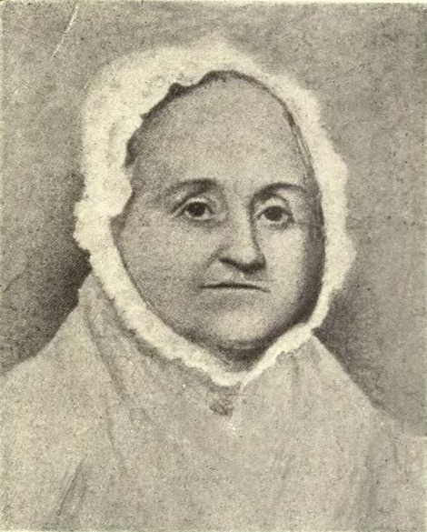
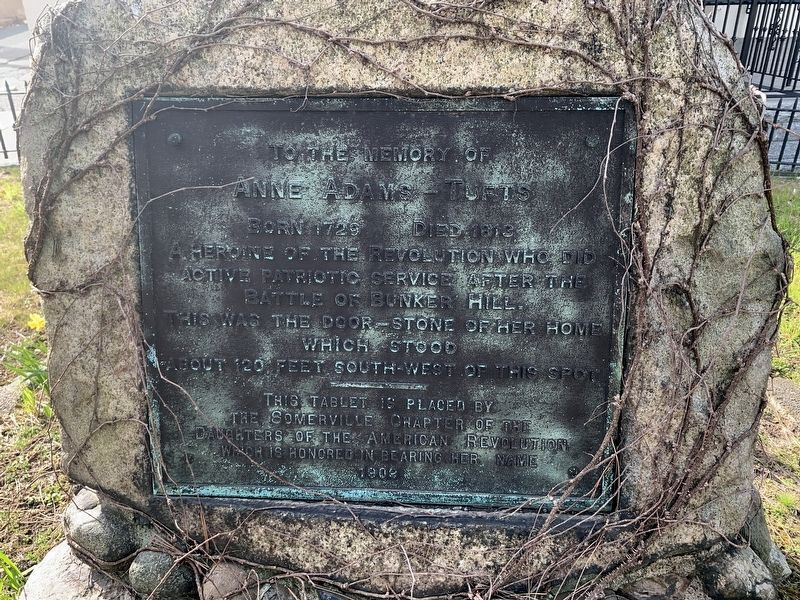
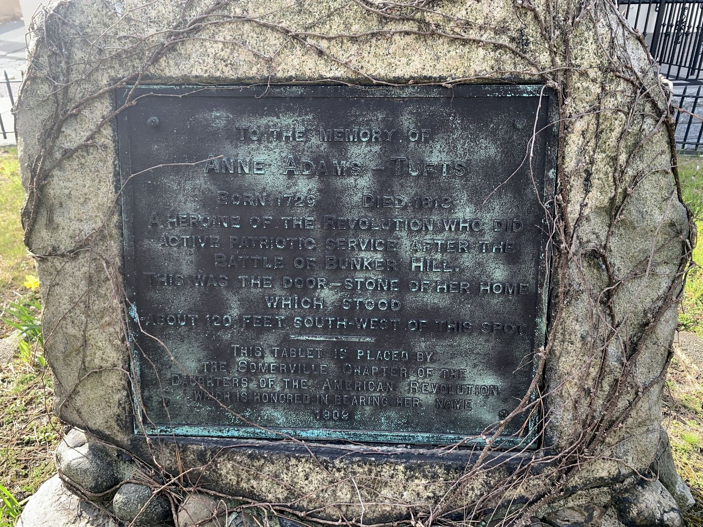
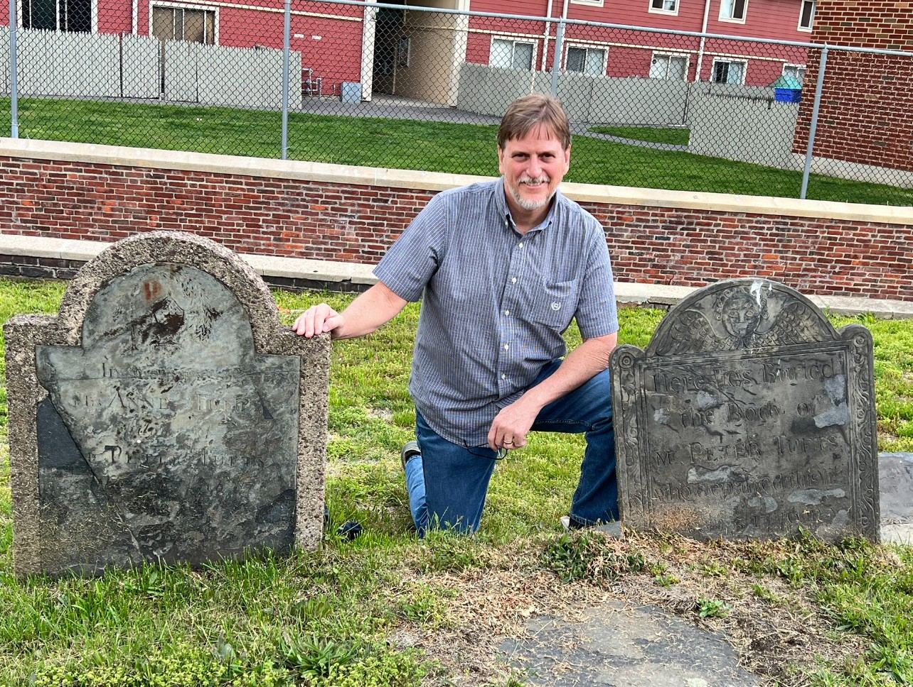

Anne (or Anna) Adams was born in Menotomy, the northwest precinct of Cambridge that is now Arlington, a daughter of Lieut. Joseph Adams and Rachel (Allen) Adams. On April 19, 1750, she married Peter Tufts of Winter Hill, and they raised a large family on his farm there.
After the Battle of Bunker Hill she nursed the wounded, and in 1777–78 she nursed a dying woman of the Convention Army camp on Winter Hill, as told by Booth and by the Massachusetts DAR history of 1905.
Summary drawn from the sources cited on this page.
Biography

Anne (or Anna) Adams was born in Menotomy, the northwest precinct of Cambridge that is now Arlington, a daughter of Lieut. Joseph Adams and Rachel (Allen) Adams. On April 19, 1750, she married Peter Tufts of Winter Hill , and the couple raised a large family on his farm on Winter Hill. Twenty-five years to the day later, the Lexington alarm called her husband out.
, and the couple raised a large family on his farm on Winter Hill. Twenty-five years to the day later, the Lexington alarm called her husband out.
“Anna, b. in Menotomy, July 8, 1729; m. April 19, 1750, Peter Tufts, Jr., b. April 19, 1729, d. 4 March, 1791. She d. 17 Feb., 1813, age 84.”
Andrew N. Adams, A Genealogical History of Henry Adams of Braintree, Mass., and His Descendants; also John Adams of Cambridge, Mass. (1898), p. 964. Book scan (Internet Archive) (Transcribed from the printed page.)
“The 19th of April, as it chanced, was the silver wedding anniversary of Peter and Anne Tufts, who lived at Winter Hill.”
Ellen Chase, The Beginnings of the American Revolution (1910), vol. III, p. 99. Page (Internet Archive)
Her sister Mary married Peter’s brother Nathan, so that, as Booth put it, “The elder brother married the younger sister, the younger brother the elder sister.” Booth describes the two women as being “of strong character and great natural vigor of constitution” (Historic Leaves, vol. 1, p. 21).
Bunker Hill and the Winter Hill prisoners
“After the battle of Bunker Hill, Anne Tufts assisted in binding up the wounds of eight wounded soldiers who were brought to her house; and later in the war when a part of Burgoyne's army was encamped as prisoners on Winter hill, she went to the camp and nursed all night the dying wife of one of the prisoners. Years afterward that soldier journeyed from Canada, where he had settled after the war, and sought out Mrs. Tufts to thank her again for that service and to ask her to point out the spot of his wife's grave.”
Edward C. Booth, “The Tufts Family in Somerville,” Historic Leaves (Somerville Historical Society), vol. 1 (1902–03), p. 21–22. Text (Perseus)
The Massachusetts DAR history of 1905, drawing on an obituary “written by a grandson,” tells how she dressed the wounds:
“Anne Adams Tufts, with true motherly spirit, in this emergency, drew from her hospital supplies in the form of home-spun linen sheets and spreading them with the cool sweet cream from her dairy, dressed the wounds of the soldiers, asking not whether they be friend or foe.”
History of the Massachusetts Daughters of the American Revolution (1905), “Anne Adams Tufts Chapter, of Somerville,” beginning p. 5. Book scan (Internet Archive) (Transcribed from the printed page.)
“The first school on Winter Hill “was kept” in the kitchen of this house, and later, when a schoolhouse was built, the first printing office was established here by a descendant.”
History of the Massachusetts Daughters of the American Revolution (1905), “Anne Adams Tufts Chapter, of Somerville,” beginning p. 5. Book scan (Internet Archive) (The printer was her grandson Edmund Tufts; see Booth, p. 24.)

Her husband served as a Charlestown selectman in 1781 and died in 1791; Anne lived on as a widow for twenty-two years (Booth, p. 21). The house stood “near the westerly corner of Central street and Broadway” before it was moved to Lowell Street (Booth, p. 21). Its door-stone remains in Paul Revere Park, Broadway at Main Street, under the 1909 DAR tablet; see the tablet and its transcription.
The chapter named for her
“At a meeting held March 16, it was voted that the Chapter be named for Anne Adams Tufts, a resident, in the days of the Revolution, of Winter Hill, Charlestown (now Somerville).”
History of the Massachusetts Daughters of the American Revolution (1905), “Anne Adams Tufts Chapter, of Somerville,” beginning p. 5. Book scan (Internet Archive) (Transcribed from the printed page.)
The chapter grew from an informal meeting on March 10, 1897, at the home of Miss Mary A. Bradford, “a lineal descendant of Governor Bradford,” who became the first regent. It was approved by the National Society on January 6, 1898, with fifteen charter members; its seal was given February 17, 1899, and the charter presented in May 1899 by State Regent Sara W. Daggett. Anne’s great-granddaughter Mrs. Helen Magoun Heald served it “continuously since its inception, as Registrar, Regent and Historian” (Mass. DAR history, 1905). A Somerville history blog adds that the chapter’s charter was framed in wood from an apple tree on the Adams–Magoun estate, from which its gavel was also made (Somerville history blog (bouseblog), “Magoun Square” (August 6, 2015). Article).
In the DAR Records

The DAR lists her as DAR Ancestor no. A116782, born July 8, 1729, at Lexington, and died February 7, 1813, at Medford, with the notice that future applicants must prove correct service. Its marker index records the doorstone tablet shown here, placed in 1909 at Winter Hill by the chapter named for her and presented to the city. Its grave index places her in the Old Phipps Burying Ground, Charlestown, and gives her service as taking eight wounded soldiers from the Battle of Bunker Hill into her home and caring for them and others (DAR Genealogical Research System, Revolutionary War grave and marker records).

⚑ Unverified
Birth and death: the DAR ancestor record gives Lexington and Medford, and its grave index gives a death date of February 13, 1813. Find a Grave gives Cambridge and Charlestown, February 7, 1813. Note: Pending further work.
Service Record
Town: Menotomy (Arlington) and Winter Hill, Charlestown (now Somerville), Mass. · Dates: 1729–1813
Civilian service: nursing the wounded after Bunker Hill (June 17, 1775) and a dying woman of the Convention Army camp on Winter Hill (1777–78), as told by Booth (1902) and the Mass. DAR history (1905). No contemporary record of this service has been found.
Family Connection
Father: Lieut. Joseph Adams of Menotomy. Mother: Rachel (Allen) Adams (Adams genealogy, p. 964). Brother: Capt. William Adams (1725–1787) of Menotomy, a captain in Col. Thatcher’s regiment. Sister Mary (b. 1733) married Nathan Tufts, Peter’s brother, in 1751; sister Rebecca married Samuel Kent (Adams, p. 964; Historic Leaves, vol. 3, p. 89).
“i. Peter Tufts, b. May 20, 1751, d. 19 March, 1752. ii. Peter Tufts 3d, b. Jan. 9, 1753; m. July 2, 1773, Hannah Adams … iii. John Tufts, b. Nov. 24, 1754; m. Elizabeth Perry. iv. Ann Tufts, b. Jan. 2, 1757; m. Abel Richardson. v. Elizabeth Tufts, b. Oct. 23, 1758; m. March 2, 1787, Daniel Swan. vi. Joseph Tufts, b. July 12, 1760; m. Abigail Tufts. vii. Lydia Tufts, b. June 10, 1762; m. Rev. Robert Gray of Dover, N. H. viii. Asa Tufts, b. July 2, 1764, d. 24 Oct., 1828. ix. Thomas Tufts, b. May 18, 1766 … x. Lucy Tufts, b. Nov. 12, 1767; m. Jacob Osgood. xi. Rebecca Tufts, b. Sept. 20, 1769; m. Nathan Adams, Esq. … xii. Sarah Tufts … m. Feb. 25, 1802, Maj. Joseph Adams”
Andrew N. Adams, A Genealogical History of Henry Adams of Braintree, Mass., and His Descendants; also John Adams of Cambridge, Mass. (1898), p. 973. Book scan (Internet Archive) (Transcribed from the printed page.)
Children with profiles: Peter Tufts Jr. (1753–1832) and Cpl. John Tufts (1754–1839)
and Cpl. John Tufts (1754–1839) . Grandson: Peter Tufts the surveyor (1774–1825). Her granddaughter Sarah Ann Adams (b. 1802), daughter of Sarah Tufts and Joseph Adams, married John C. Magoun (Somerville history blog (bouseblog), “Magoun Square” (August 6, 2015). Article).
. Grandson: Peter Tufts the surveyor (1774–1825). Her granddaughter Sarah Ann Adams (b. 1802), daughter of Sarah Tufts and Joseph Adams, married John C. Magoun (Somerville history blog (bouseblog), “Magoun Square” (August 6, 2015). Article).
Relatives with profiles on this site: son Peter Tufts Jr. ; son John Tufts
; son John Tufts ; grandson Peter Tufts the surveyor; brother-in-law Timothy Tufts
; grandson Peter Tufts the surveyor; brother-in-law Timothy Tufts ; father-in-law Peter Tufts (1697–1776); daughter Ann Tufts Richardson (b. 1757); daughter Elizabeth Tufts Swan (b. 1758); son Joseph Tufts (b. 1760); daughter Lydia Tufts Gray (b. 1762); son Asa Tufts (1764–1828); son Thomas Tufts of Lexington (1766–1830); daughter Lucy Tufts Osgood (b. 1767); daughter Rebecca Tufts Adams (1769–c. 1848); daughter Sarah Tufts Adams; husband Peter Tufts of Winter Hill
; father-in-law Peter Tufts (1697–1776); daughter Ann Tufts Richardson (b. 1757); daughter Elizabeth Tufts Swan (b. 1758); son Joseph Tufts (b. 1760); daughter Lydia Tufts Gray (b. 1762); son Asa Tufts (1764–1828); son Thomas Tufts of Lexington (1766–1830); daughter Lucy Tufts Osgood (b. 1767); daughter Rebecca Tufts Adams (1769–c. 1848); daughter Sarah Tufts Adams; husband Peter Tufts of Winter Hill ; grandson Oliver Tufts (1801–1883).
; grandson Oliver Tufts (1801–1883).
Spouse(s)
- Peter Tufts of Winter Hill
 (b. April 19, 1729, per Adams; 24 April 1728, per NEHGR; d. March 4, 1791). Married April 19, 1750 (Adams genealogy, p. 964).
(b. April 19, 1729, per Adams; 24 April 1728, per NEHGR; d. March 4, 1791). Married April 19, 1750 (Adams genealogy, p. 964).
16. Peter3 (John2 Peter1), of Charlestown, married Lydia, daughter of Joses and Judith (Worth) Bucknam of Malden, who was born 170-, and died 31 October, 1776. He died 5 December, 1776. Children: 41. i. Nathan,4 b. 14 May, 1724; m. Mary Adams. 42. ii. Peter, b. 24 April, 1728; m. Anne Adams.
Transcription of the clipping above: “Tufts Genealogy—Earlier Generations,” New England Historical and Genealogical Register 51 (July 1897), p. 304. View the page scan
Authoritative IDs / Index Numbers
| Source | ID / status |
|---|---|
| Perseus person index (auth=) | Note: Pending further work. |
| Find a Grave memorial | Note: Pending further work. |
| Brooks, History of Medford (1855) register no. | Note: Pending further work. |
| Mass. Soldiers and Sailors | Not yet checked for this page |
| DAR ancestor no. | A116782 (DAR Ancestor Database) |
| FamilySearch ID | Note: Pending further work. |
| Geni profile | 6000000015286135108 (supplied link; not opened) |
| WikiTree ID | Adams-2573 (supplied link; page could not be opened from this machine) |
| Town / vital records | Medford VRs not yet checked by volume and page |
Only IDs confirmed against dates and family are given as matches. “Not yet checked” means the source has not been searched; “Checked, not found” means it was searched without a match.
⚑ Unverified
Birth place: Menotomy (Adams, p. 964; the 1905 DAR history pictures her “birthplace” in Menotomy). Earlier pages of this site quote Jones (“Anne Adams of Quincy”) and the family history (“daughter of Joseph Adams of Cambridge”); Menotomy was then part of Cambridge, so the family history agrees and Jones appears to be wrong. Death: 17 Feb. 1813 (Adams, p. 964; Jones, p. 129) against Feb. 7 (Wyman, p. 965). Husband’s birth: Adams gives April 19, 1729; NEHGR 51 (p. 304) gives 24 April 1728. Number of wounded: Booth says eight soldiers; the 1905 DAR history says the house was “turned into a hospital.” Helen Magoun Heald: the 2015 blog calls her the chapter’s founding regent; the 1905 DAR history names Mary A. Bradford first regent and Mrs. Heald second regent. The site follows the 1905 history. The 1909 Boston Globe clipping supplied for this page (newspapers.com clipping 98669433) could not be opened from this machine. Note: Pending further work.
Her Husband
Full profile: Peter Tufts of Winter Hill (1728–1791) .
.
Links and Resources
Every source, record, map, survey, marker and artifact tied to this person, gathered in one place. Page numbers are given where a book is cited.
Maps, Surveys and Artifacts
- Siege of Boston plan (1776) — Shows the siege lines across the Winter Hill land where she nursed the wounded.
- — The Anne Adams Tufts doorstone tablet, Somerville. Bronze tablet on the doorstone of her home: “To the memory of Anne Adams Tufts, born 1729, died 1813. A heroine of the Revolution who did active patr
- — Gravestones of Peter and Anne Tufts, Phipps Street Burying Ground, Charlestown. Shannon Tufts between the slates of Peter Tufts of Winter Hill (right: “Here lyes buried the body of Mr. Peter Tufts, wh


Markers, Plaques and Places
- The 1909 DAR tablet on her door-stone — Photographs and transcription of the tablet in Paul Revere Park, Somerville.
- HMdb marker 248718: Anne Adams-Tufts — Historical Marker Database entry with photographs and location.
Digitized Books and Journals
- Andrew N. Adams, A Genealogical History of Henry Adams of Braintree, Mass., and His Descendants; also John Adams of Cambridge, Mass. (1898), p. 964. · Book scan (Internet Archive)
- Ellen Chase, The Beginnings of the American Revolution (1910), vol. III, p. 99. · Page (Internet Archive)
- Edward C. Booth, “The Tufts Family in Somerville,” Historic Leaves (Somerville Historical Society), vol. 1 (1902–03), p. 21–22. · Text (Perseus)
- History of the Massachusetts Daughters of the American Revolution (1905), “Anne Adams Tufts Chapter, of Somerville,” beginning p. 5. · Book scan (Internet Archive)
Archives, Letters and Records
- DAR Ancestor no. A116782 — The DAR lists her as
Biographies and Family Trees
Secondary and user-contributed sites; not verified here.
- …Somerville history blog adds that the chapter’s charter was framed in wood from an apple tree on the Adams–Magoun estate, from which its gavel was also made (Somerville history blog (bouseblog), “Magoun Square” (August 6, 2015). · Article
- Geni profile · 6000000015286135108
- Adams-2573 — WikiTree ID
Related Pages on This Site
- Peter Tufts of Winter Hill — Anne (or Anna) Adams was born in Menotomy, the northwest precinct of Cambridge that is now Arlington, a daughter of Lieut. Joseph Adams and Rachel (Allen) Adams. On April 19, 1750, she marrie